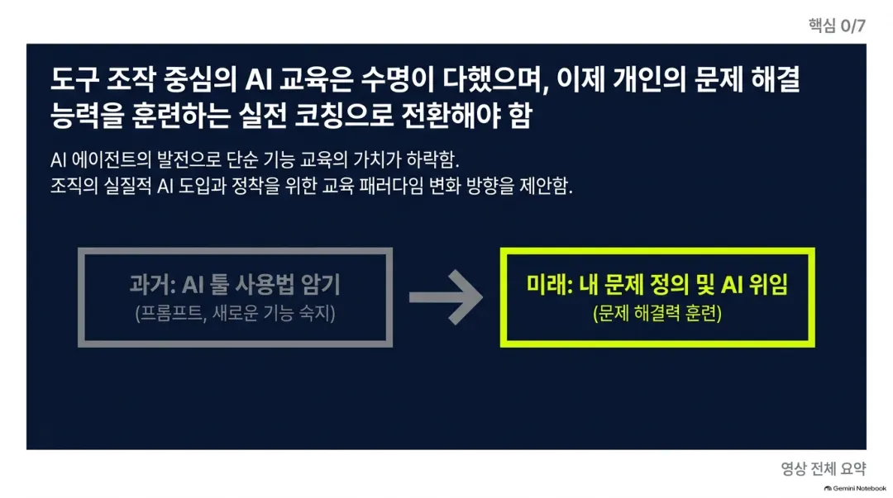
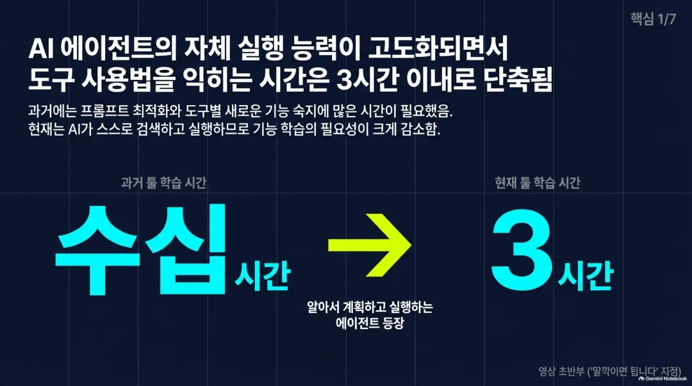
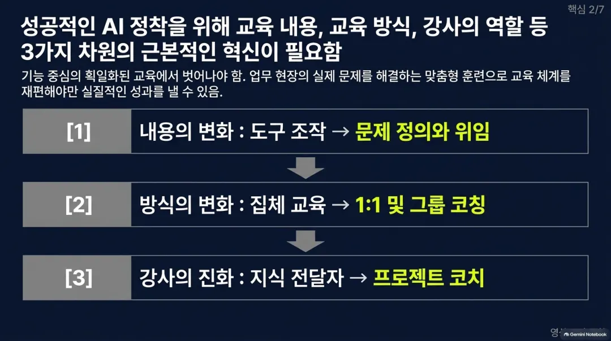
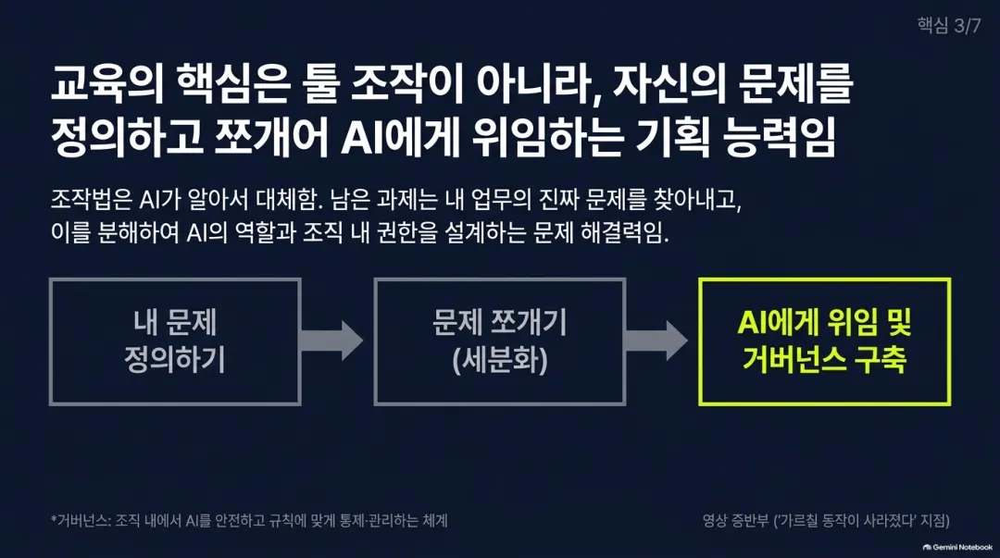
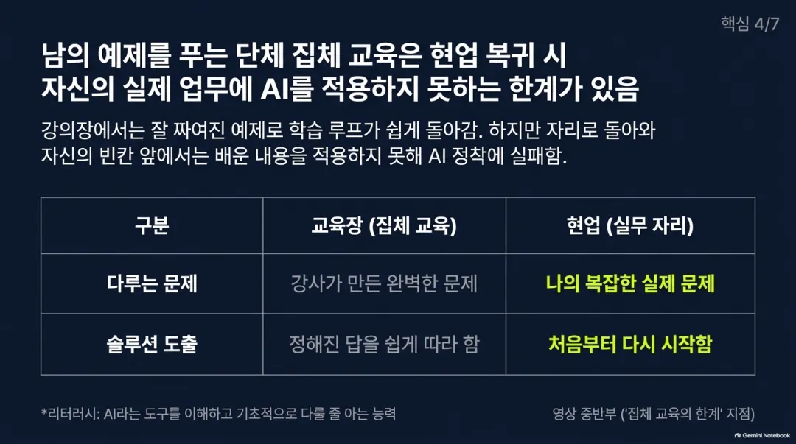
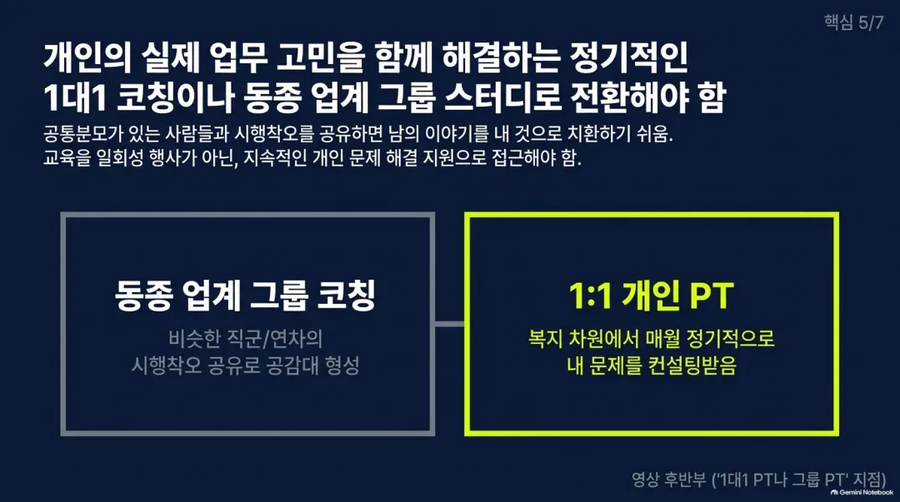
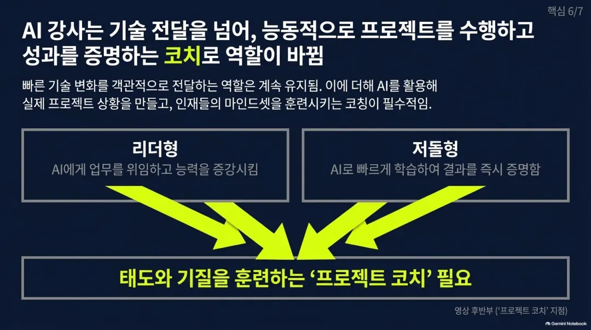
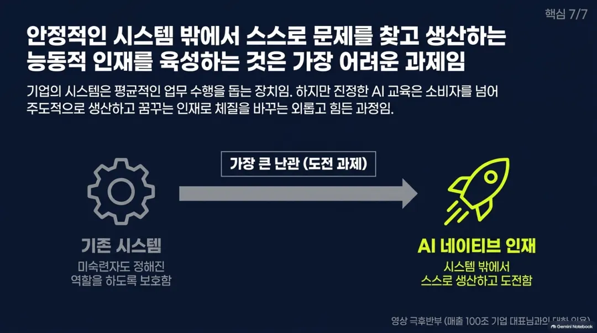
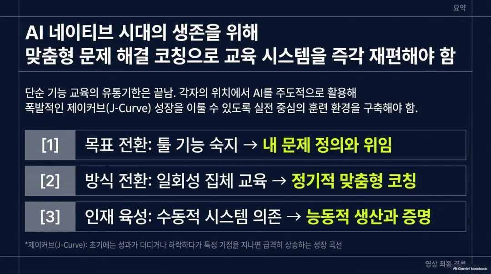

9월 17일 23:14
예전에는 프롬프트 작성법을 따로 배워야 했지만 지금은 에이전트가 알아서 처리함. 도구 사용법을 배우는 데 걸리는 시간도 길어야 서너 시간이면 충분해짐.
예전 교육은 도구 사용법이 대부분이었음. 그런데 에이전트가 말만 하면 파일도 찾고 계획도 세우고 실행까지 하기 때문에 그 과정을 따로 가르칠 필요가 없어짐.
이제 중요한 건 자기 문제를 어떻게 정의하고 쪼개는지, 그리고 그걸 얼마나 위임할지 결정하는 능력임. 조직 안에서 이런 걸 관리하는 거버넌스 고민도 필요해짐.
어떤 기능을 알려주는 건 쉽지만 문제 정의와 해결은 강의실 예제로는 배우기 어려움. 각자의 진짜 문제 앞에 서면 처음부터 다시 시작하는 것과 같음.
원래 학습은 문제를 정의하고 풀고 피드백 받는 과정이 반복돼야 함. 하지만 강의장에서는 이미 짜인 남의 문제와 솔루션을 그대로 따라가는 데 그침.
각자 자기 문제를 들고 와서 함께 푸는 1대1 코칭이 이상적이지만 예산 문제가 큼. 대안으로 같은 산업, 같은 직급, 비슷한 연차끼리 묶어 비슷한 고민을 함께 해결하는 그룹 방식을 제안함.
한 번 와서 끝내는 교육이 아니라 개인 트레이너처럼 주기적으로 개인 문제를 봐주는 방식이 필요함. 교육비가 아니라 복지비 개념으로 한 달에 네 번 정도 자기 문제를 봐 달라고 하는 방식을 제안함.
도구 사용법을 가르치는 게 아니라 실제 업무에 에이전트를 위임하고 증강시키는 훈련을 시키는 역할로 바뀌어야 함. 프로젝트 상황을 만들어주고 그 안에서 학습하게 돕는 방식임.
AI를 잘 쓰는 사람은 크게 두 유형임. 위임과 증강을 잘하는 리더형과 AI로 빠르게 학습해서 증명해버리는 저돌적인 형태임. 이런 태도와 기질을 훈련하는 방법이 스킬보다 더 중요함.
기존 시스템은 부진한 사람도 역할을 할 수 있게 만들어줬지만, 그 시스템 밖에서 스스로 생산적인 일을 하는 인재로 바꾸는 것은 매우 어려움. 이것이 진짜 AI 교육이 해내야 할 일임.









화자는 자신이 운영하는 AI교육 서비스의 한계를 스스로 인정하면서 새로운 교육 형태(1대1·그룹 코칭)로 전환하려는 의도를 밝힘. 영상 말미에 "저희 팀도 피봇을 고민 중"이라 직접 언급해 채널 구독자에게 향후 서비스 변화를 예고하고 신뢰를 쌓으려는 목적이 있음. 특정 상품 판매나 링크 유도는 없고 채널 브랜딩과 향후 전환에 대한 공감대 형성이 핵심으로 보임.